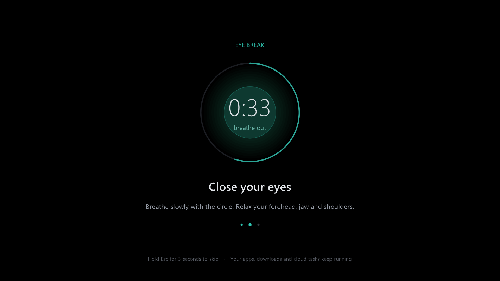
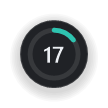
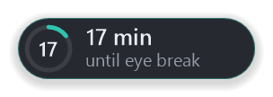
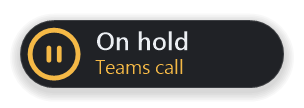
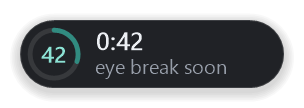
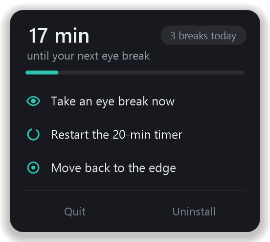

EyeBreak fades your screen to a calm, guided 1-minute rest. It waits for your meetings and presentations, and everything you're running keeps going underneath.





A 34 px ring sits on top of everything, fullscreen games included. Drag it anywhere and it remembers the spot.
The timer always runs. When the break is due, EyeBreak checks whether now is a bad moment first.
Teams, Zoom, Meet, Webex, Slack, Discord and more. If your camera or call mic is on, the break waits and starts about a minute after the call ends.
PowerPoint slideshows, presentation mode and fullscreen Slides, Keynote or Canva. Even the badge hides, so your audience never sees it.
If an unknown app is using your mic, it asks once: "Is this a meeting?" Say yes and it remembers that app from then on.
The break is only a black window on top. Builds, downloads, renders and cloud jobs carry on untouched.
Look far away, close your eyes and breathe with the circle, then blink and roll. A soft chime tells you when to open your eyes.
The keyboard pauses during the break so you actually rest. Hold Esc for 3 seconds if you really must skip it.
Click the badge (or the tray icon) for your status, today's break count, and the few actions you might need. Click anywhere else to close it.

No installer wizard. The app sets itself up the first time you run it.
It's the well-known 20-20-20 habit: every 20 minutes, look at something about 20 feet (6 m) away for at least 20 seconds. EyeBreak gives you a full minute and guides you through it.
No. The break screen is just a black window on top. Nothing is paused, closed or put to sleep. EyeBreak itself uses roughly 0% CPU while it waits.
If you're away for a minute or more, that counts as a rest, so the 20 minutes start fresh when you're back.
No. There's no network access at all. Meeting detection reads Windows' own "mic/camera in use" status and window titles locally on your PC.
To update, download the new EyeBreak.exe and run it; it replaces the old version. To remove it, click the badge and choose Uninstall.